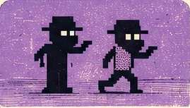
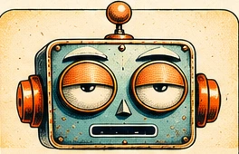
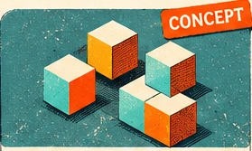
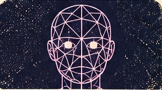
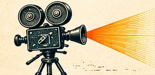

vidiotbox.net
THE FINE ART OF
DIGITAL USELESSNESS
A collection of curious ideas, improbable creations, and things I made just because I wanted to.

USELESS DIGITAL ART PROJECTS
Haiku-Matic
AI-Generated Haiku
for No Good Reason.

Pocket Prowler
A Digital Scavenger
& Exploration Toy.

vidiotbox
Interactive Face
Simulator.

Real-World Prosthetic
Cheap Finger is a low-cost, 3D-printed finger prosthetic. Refined through real-world testing, it helps with everyday tasks like gripping and typing.

Faceimator
Turn Faces into
Something Else.

The philosophy, process, and creative detours
behind all of this.
FIELD NOTES / PAUL HODARA
Made because I wanted to.
Vidiotbox is my collection of curious ideas, improbable creations, and creative detours. Some become little devices. Some live in a browser. Others begin with a simple question: what happens if I try this?
After more than thirty years of developing software and hardware, I’m exploring how AI changes the way we build, create, and understand our own intelligence. This is a place to experiment, play, and follow an idea without requiring it to be useful.
FURTHER EXPERIMENTS